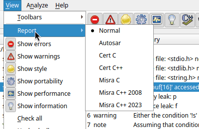
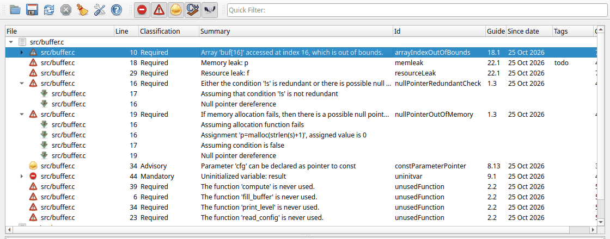

error
errorEvery warning has a severity that tells you what kind of problem it is and how serious it is. The severity is shown in the Severity column and as an icon in the results list. Use the buttons in the severity toolbar, or the View menu, to show or hide each severity.
errorThe code has a bug that causes bad behavior when it is executed: undefined behavior, a crash, a memory or resource leak, and similar. Errors should always be fixed.
Examples: array index out of bounds (arrayIndexOutOfBounds),
null pointer dereference (nullPointer), use of an uninitialized
variable (uninitvar), memory leak (memleak), resource
leak (resourceLeak), use after free
(deallocuse), division by zero (zerodiv),
mismatching allocation and deallocation (mismatchAllocDealloc).
void f()
{
char buf[10];
buf[10] = 0; // error: arrayIndexOutOfBounds
}
 warning
warningThe code can cause bad behavior in some situations, or there is code that is almost certainly not doing what the programmer wanted. Warnings should be looked at carefully; most of them are bugs.
Examples: a null pointer check after the pointer has already been used
(nullPointerRedundantCheck), not checking the result of
malloc() (nullPointerOutOfMemory), wrong argument type
for a printf format (invalidPrintfArgType_sint), assignment in a
condition where a comparison was meant, a member variable that is not
initialized in a constructor (uninitMemberVar).
void f(struct S *s)
{
int x = s->x;
if (!s) // warning: nullPointerRedundantCheck
return;
}
 style
styleThe code is not wrong, but it can be improved: it is confusing, redundant, or not as safe as it could be. Style warnings often point to real bugs, for example a condition that is always true can mean that the wrong variable is used. They also suggest more defensive programming.
Examples:
unusedVariable,
unreadVariable, unusedFunction),knownConditionTrueFalse),constVariable, constParameterPointer,
functionConst),variableScope),duplicateBranch),clarifyCalculation).int f(int x)
{
if (x > 0 && x > 10) // style: the first condition is redundant
return 1;
return 0;
}
 performance
performanceSuggestions to make the code faster. They are based on common knowledge about what is slow. It is not certain that you get a measurable speed improvement by fixing them; it depends on how often the code runs.
Examples: passing a large object by value instead of by const reference
(passedByValue), using it++ instead of
++it for iterators (postfixOperator), inefficient use
of STL containers.
void print(std::vector<std::string> names); // performance: passedByValue
 portability
portabilityThe code may work on your platform but not on others: implementation defined behavior, 64-bit problems, or undefined behavior that happens to work "as you want" with your compiler.
Examples: storing a pointer in an int
(AssignmentAddressToInteger), shifting a negative value, casting
between incompatible pointer types (invalidPointerCast), assuming
the size of a type.
Some portability warnings depend on the platform you have selected; see Platform.
 information
informationMessages about the analysis itself, not about your code. If you get information messages, your code may be fine but the Cppcheck configuration can be improved. Fixing the configuration usually gives better results.
Examples:
missingInclude: an include file of your project was not
found. Add the folder to the
include paths.missingIncludeSystem: a standard or system header was not
found. This is normal and you do not need to do anything; Cppcheck has
built-in knowledge of the standard library. You can hide these with the
severity toolbar or suppress the id.toomanyconfigs: a file has more preprocessor configurations
than Cppcheck analyzes by default. See
Defines.normalCheckLevelMaxBranches: the analysis of a function was
limited. Use the Exhaustive check level to analyze it fully.Notes are not warnings. They are shown as child items of a warning and explain the path through the code that leads to it. See Investigating warnings.
If you work with a coding standard, you can show the results classified according to that standard. Select the standard in View > Report:

| Report | Classifications | Extra columns |
|---|---|---|
| Normal | The Cppcheck severities described above. | |
| Autosar | Required, Advisory | Classification, Guideline |
| Cert C, Cert C++ | L1, L2, L3 (the CERT priority levels; L1 is the most severe) | Level, Rule |
| Misra C, Misra C++ 2023 | Mandatory, Required, Advisory | Classification, Guideline |
| Misra C++ 2008 | Required, Advisory, Document | Classification, Guideline |
With a compliance report type:

The report type only changes how results are shown; the analysis is the same. To check the code against the rules of a coding standard, enable the standard on the Addons tab of the project. Open source Cppcheck has a Misra C addon; checking the other standards needs Cppcheck Premium.